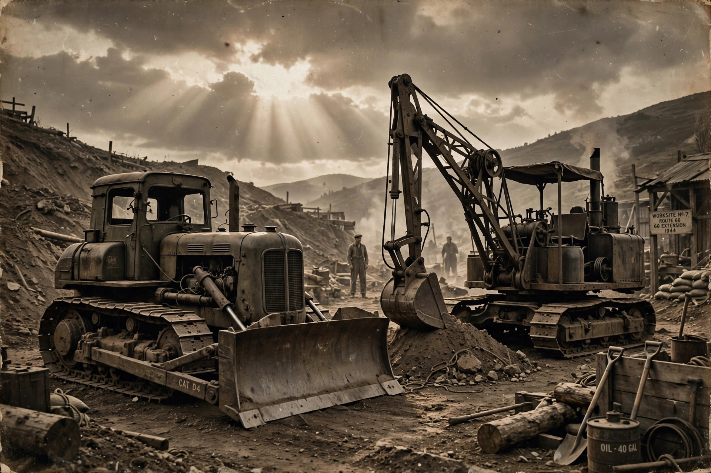

The Story
A town razed — and the men who put it back together.

Born in Swansea in 1943, in a town already scarred by the night raids that levelled forty acres of its centre, the author grew up in a world of machinery — diggers, bulldozers, tipper trucks and tractors, and the mechanics who kept them running.
From the docks to the rebuilding of the town, this is a first-hand account of an extraordinary period: the machines, the men who drove them, and a community remaking itself after devastation.
Sample presentation — the finished site would carry the author's own words and photographs.